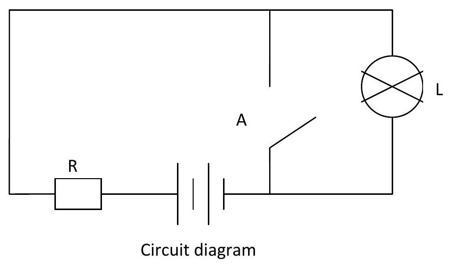

CHAPTER 3: LOGIC GATES AND BOOLEAN ALGEBRA (Continued)
Venn Diagrams
In mathematics, we can use the graphs and diagrams to solve some problems in geometry as well as in algebra. To follow this procedure, we can show some relations in set theory with the help of diagram, which is called as the Venn diagram. It is also known as set diagram. Venn diagrams are named so in the name of its founder John Venn in around 1880.
In set theory, Venn diagrams are studied. A set is defined as a collection of the same types of things. Venn diagram is an important and unique way of representing sets and various operations on them. It is a pictorial representation of sets. It is an easy way to understand about set theory. Venn diagrams are everywhere in set theory. With the help of Venn diagrams, we are able to show the operations of union, intersection, difference, complement etc. on the given sets.
In this page, we can discuss about these things with the help of a Venn diagram. In this process, the sets are represented by circles. Venn diagrams are generally used to represent operations on two or three sets. In order to learn about set theory in detail, one needs to command on Venn diagrams. In this article, students will learn about different types of Venn diagrams. So, go ahead with us and understand about Venn diagrams in detail.
What is a Venn Diagram?
A Venn diagram is a pictorial representation of sets by set of points in the plane. The universal set $U$ is represented pictorially by interior of a rectangle and the other sets are represented by closed figures viz circles or ellipses or small rectangles or some curved figures lying within the rectangle.
Venn diagram is a graphical tool in which we use overlapping circles to visually presentation among some given sets information. In Venn diagram, we can use two or more than two circles to show sets.
Make a Venn Diagram
To make a Venn diagram, first we draw a rectangle to show the universal set $U$ and mark $U$ inside the rectangle. After that, we will make circles for given sets and name them as A, B, C etc. Then, according to the given relation of the sets, we can make a diagram for these sets in the rectangle to show the relationship of the sets. Sometimes, we have some elements for the individual sets, then fill all the elements in their respective sets and as per the given relation of the sets.
For example, if A and B are any two arbitrary sets, elements such that, some elements are in A but not in B, some are in B but not in A, some are in both A and B, and some are in neither A nor B , we represent A and B in the pictorial form as in shown in the Venn diagram.
$A$ is a subset of $B$ and is represented as shown in the Venn diagram.
Disjoint Sets
$A$ and $B$ are disjoint sets as shown in the Venn diagram.
Triple Venn Diagram
For the triple Venn diagram, we need three sets as A, B and C. In the triple Venn diagram, we have to show some relationship between these three sets.
For example, let $A=\{a, b, c, d, e\}, B=\{a, b, f, g, h\}$ and $C=\{a, c, e, f, g, j, k\}$. Here, we can find $\mathrm{A} \cap \mathrm{B}, \mathrm{B} \cap \mathrm{C}, \mathrm{A} \cap \mathrm{C}$ and $\mathrm{A} \cap \mathrm{B} \cap \mathrm{C}$ with the help of triple Venn diagram.
Given $A=\{a, b, c, d, e\}, B=\{a, b, f, g, h\}$ and $C=\{a, c, f, g, j, k\}$. Now, $A \cap B=\{b\}, B \cap C =\{f, g\}, A \cap C=\{c\}$ and $A \cap B \cap C=\{a\}$

4 Circle Venn Diagram
Some times, we have four sets in a given problem and we want to show their relationship with the help of Venn diagram. For this, we can draw four circles in a rectangle box, each circle represents a unique set. Then, according to sets relation fill all the elements at their place.
Venn Diagram With Lines
In mathematics, sometimes we use the lines in the Venn diagram to show the union, intersection, difference etc. for the given sets. If we have sets A and B, then with the line Venn diagram we can show as:

Picture of a Venn Diagram
If we have two sets A and B , then $\mathbf{A} \cup \mathbf{B}$ i.e. A union B:
$A \cap B$ i.e. $A$ intersection B:
$A$ and $B$ are disjoint sets:
A subset B:
Venn Diagram Union
If we have two sets $A$ and $B$, then $A \cup B$ is the set of all elements that are in set $A$ and in the set $B$. If any element common in these two set, then we will take that one only one time. So, we can say that the union of the set A and B is everything which are either in set A or in the set B.
Let $A=\{1,2,3,4,5\}$ and $B=\{2,6,7,8\}$ then $A \cup B=\{1,2,3,4,5,6,7,8\}$. To show this union, we can use the Venn diagram also as

A Union B
Venn diagram Word Problems
Given below are some of the word problems on Venn diagram.
Solved Example
Question: There are 40 players participated in tournament match. In that, 20 players play in volley ball match and 20 players play in football match and 5 players play in both volley ball and football match. Solve this problem by using Venn diagram. How many of the players are either in match and how many are in neither match?
Solution:
There are two categories, one is volleyball and other one is football.
Step 1:
Draw Venn diagram depending up on the classification given in the problem.
Step 2:
Note that 5 players play both volleyball and football match
Step 3:
Here, we accounted for 5 of the 20 players in volleyball match, leaving 15 players taking volleyball match but not football match. So, I will put "15" in the "volleyball only" part of the "volley ball" circle.
Step 4:
Here, we accounted for 5 of the 20 players in football match, leaving 15 players taking football match but not volleyball match. So, I will put "15" in the "football only" part of the "football" circle.
Step 5:
The total of $5+15+15=35$ players are in either volley ball match or football match (or both). The total numbers of players are 40 and participating players are 35 only.
$40-35 = 5$ players
Boolean Algebra
In 1850, George Boole, an English mathematician developed rules and theorems that became Boolean algebra.
Boole's work was an outcrop of work in physiology called LOGIC.
Logic can be used to break down complex problems to simple and understandable problems.
The binary nature of logic problems was studied by Cloude Shannon of MTI in 1938. Shannon applied Boolean algebra to relay logic switching circuits as means of realizing electric circuits.
Electric circuits used for digital computers are designed to generate only two voltage levels
Eg - high level ( $\approx 5 \mathrm{~V}$ ) and low level ( $\approx 0 \mathrm{~V}$ )
The binary number system requires two symbols hence its logical to identify a binary symbol with each voltage level. If we interpolate the high level as a binary 1and low level as a binary 0 , then we are using a positive logic system.
Terminologies in Boolean Algebra
logic function and logic gates
Logic circuit - A computer switching/electronic circuit that consists of a number of logic gates and performs logical operations on data
A logic gate is an idealized or physical device implementing a Boolean function; that is, it performs a logical operation on one or more binary inputs, and produces a single binary output. A logic gate is a small transistor circuit, basically a type of amplifier, which is implemented in different forms within an integrated circuit. Each type of gate has one or more (most often two) inputs and one output.
Boolean operation is any logical operation in which each of the operands and the result take one of two values, as "true" and "false" or "circuit on" and "circuit off."
A Boolean Function is a description of operation (logic operation) on algebraic expression called Boolean expression which consists of binary variables, the constants 0 and 1, carried out in digital/electronic circuits and the logic outputting there off. The logic operation is well expressed in truth tables.
Truth tables
A truth table is a breakdown of a logic function by listing all possible values the function can attain. Such a table typically contains several rows and columns, with the top row representing the logical variables and combinations, in increasing complexity leading up to the final function.
Downloaded by Patrick Ngobiro (pngobiro@gmail.com)
Logic Functions gates and circuitry
From Boolean algebra, we get three basic logic factions that form the basis of all digital computer functions. These basic functions are: AND, OR and NOT
These functions can be expressed mathematically using Boolean algebra as given.
NOTE - The input and output variables are usually represented by letters as ABC or XYZ
- The logic state of this variables is represented by binary numbers 0 and 1
AND function
The AND function can be thought of as a series circuit containing two or more switches
Circuit diagram
The logic indicator $L$ will be ON only when logic switches $A$ and $B$ are both crossed. Switches $A$ and $B$ have two possible logic states, open and crossed. This can be represented in binary form as 0 - open and 1 - crossed.
Logic indicator L also have two possible states 0 and 1
| A | B | L(A.B) |
|---|---|---|
| 0 | 0 | 0 |
| 0 | 1 | 0 |
| 1 | 0 | 0 |
| 1 | 1 | 1 |
The truth table is used to illustrate all the possible combinations of input and output conditions that can exist in a logic circuit. The Boolean expression used to represent an AND function is as follows
And is symbolized as
OR function
The function can be thought of as a parallel circuit containing two or more logic switches
Here, the logic indicator $L$ will be $O N$ whenever logic switch $A$ and $B$ are crossed. The truth table, Expression and Symbol of OR function is as follows
NOT function
It can be thought of as an inverter or negative circuit.
The logic indicator $L$ will be $O N$ whenever logic switch $A$ is open.
The truth table, Expression and Symbol of NOT function is as follows
Symbol diagram
NAND
If an AND gate is followed by an NOT gate then the combination is called an NAND gate and has following truth table and Boolean expression.
Truth table
| A | B | L ((A.B)') |
|---|---|---|
| 0 | 0 | 1 |
| 0 | 1 | 1 |
| 1 | 0 | 1 |
| 1 | 1 | 0 |
NOR
If an OR gate is followed by an NOT gate then the combination is called an NOR gate and has following truth table and Boolean expression.
| A | B | L ((A+B)') |
|---|---|---|
| 0 | 0 | 1 |
| 0 | 1 | 0 |
| 1 | 0 | 0 |
| 1 | 1 | 0 |
Symbol diagram
XOR
This output strictly on condition that input is either high but not 2 highs
XNOR
This output strictly on condition that input is either high but not 2 highs